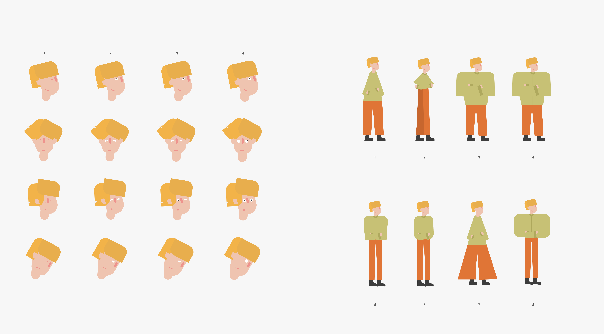

The Turinglab illustration redesign was about creating a set of illustration guidlines and visual components which could be used by the team to create assets for custom projects and courses

The illustration style was based on simple geometric shapes which could be easily manipulated to create new characters and dynamic compositions. I created a series of template illustrations and instructions on how to construct new characters.
An additional requirement for the illustration guidebook was that they should be easily animateable. I came up with a series of body templates which would allow members of the team to animate the characters on After Effects
